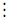

The Revision Theory of Truth
Consider the following sentence:
(1) is not true. (1)
It has long been known that the sentence, (1), produces a paradox, the so-called liar's paradox: it seems impossible consistently to maintain that (1) is true, and impossible consistently to maintain that (1) is not true: if (1) is true, then (1) says, truly, that (1) is not true so that (1) is not true; on the other hand, if (1) is not true, then what (1) says is the case, i.e., (1) is true. (For details, see Section 1, below.) Given such a paradox, one might be sceptical of the notion of truth, or at least of the prospects of giving a scientifically respectable account of truth.
Alfred Tarski's great accomplishment was to show how to give — contra this scepticism — a formal definition of truth for a wide class of formalized languages. Tarski did not, however, show how to give a definition of truth for languages (such as English) that contain their own truth predicates. He thought that this could not be done, precisely because of the liar's paradox. More generally, Tarski reckoned that any language with its own truth predicate would be inconsistent, as long as it obeyed the rules of standard classical logic, and had the ability to refer to its own sentences. As we will see in our remarks on Theorem 2.1 in Section 2.3, Tarski was not quite right: there are consistent classical interpreted languages that refer to their own sentences and have their own truth predicates. (This point originates in Gupta 1982 and is strengthened in Gupta and Belnap 1993.)
Given the close connection between meaning and truth, it is widely held that any semantics for a language L, i.e., any theory of meaning for L, will be closely related to a theory of truth for L: indeed, it is commonly held that something like a Tarskian theory of truth for L will be a central part of a semantics for L. Thus, the impossibility of giving a Tarskian theory of truth for languages with their own truth predicates threatens the project of giving a semantics for languages with their own truth predicates.
We had to wait until the work of Kripke 1975 and of Martin & Woodruff 1975 for a systematic formal proposal of a semantics for languages with their own truth predicates. The basic thought is simple: take the offending sentences, such as (1), to be neither true nor false. Kripke, in particular, shows how to implement this thought for a wide variety of languages, in effect employing a semantics with three values, true, false and neither.[1] It is safe to say that Kripkean approaches have replaced Tarskian pessimism as the new orthodoxy concerning languages with their own truth predicates.
One of the main rivals to the three-valued semantics is the Revision Theory of Truth, or RTT, independently conceived by Hans Herzberger and Anil Gupta, and first presented in publication in Herzberger 1982a and 1982b, Gupta 1982 and Belnap 1982 — the first monographs on the topic are Yaqūb 1993 and the locus classicus, Gupta & Belnap 1993. The RTT is designed to model the kind of reasoning that the liar sentence leads to, within a two-valued context. (See Section 5.2 on the question of whether the RTT is genuinely two-valued.) The central idea is the idea of a revision process: a process by which we revise hypotheses about the truth-value of one or more sentences. The present article's purpose is to outline the Revision Theory of Truth. We proceed as follows:
- 1. Semiformal introduction
- 2. Framing the problem
- 3. Basic notions of the RTT
- 4. Interpreting the formalism
- 5. Further issues
- Bibliography
- Academic Tools
- Other Internet Resources
- Related Entries
1. Semiformal introduction
Let's take a closer look at the sentence (1), given above:
(1) is not true. (1)
It will be useful to make the paradoxical reasoning explicit. First, suppose that
(1) is not true. (2)
It seems an intuitive principle concerning truth that, for any sentence p, we have the so-called T-biconditional
‘p’ is true iff p. (3)
(Here we are using ‘iff’ as an abbreviation for ‘if and only if’.) In particular, we should have
‘(1) is not true’ is true iff (1) is not true. (4)
Thus, from (2) and (4), we get
‘(1) is not true’ is true. (5)
Then we can apply the identity,
(1) = ‘(1) is not true.’ (6)
to conclude that (1) is true. This all shows that if (1) is not true, then (1) is true. Similarly, we can also argue that if (1) is true then (1) is not true. So (1) seems to be both true and not true: hence the paradox. As stated above, the three-valued approach to the paradox takes the liar sentence, (1), to be neither true nor false. Exactly how, or even whether, this move blocks the above reasoning is a matter for debate.
The RTT is not designed to block reasoning of the above kind, but to model it-or most of it.[2] As stated above, the central idea is the idea of a revision process: a process by which we revise hypotheses about the truth-value of one or more sentences.
Consider the reasoning regarding the liar sentence, (1) above. Suppose that we hypothesize that (1) is not true. Then, with an application of the relevant T-biconditional, we might revise our hypothesis as follows:
Hypothesis: (1) is not true. T-biconditional: ‘(1) is not true’ is true iff (1) is not true. Therefore: ‘(1) is not true’ is true. Known identity: (1) = ‘(1) is not true’. Conclusion: (1) is true. New revised hypothesis: (1) is true.
We could continue the revision process, by revising our hypothesis once again, as follows:
New hypothesis: (1) is true. T-biconditional: ‘(1) is not true’ is true iff (1) is not true. Therefore: ‘(1) is not true’ is not true. Known identity: (1) = ‘(1) is not true’. Conclusion: (1) is not true. New new revised hypothesis: (1) is not true.
As the revision process continues, we flip back and forth between taking the liar sentence to be true and not true.
Example 1.1
It is worth seeing how this kind of revision reasoning works in a case with several interconnected sentences. Let's apply the revision idea to the following three sentences:
(8) is true or (9) is true. (7) (7) is true. (8) (7) is not true. (9) Informally, we might reason as follows. Either (7) is true or (7) is not true. Thus, either (8) is true or (9) is true. Thus, (7) is true. Thus (8) is true and (9) is not true, and (7) is still true. Iterating the process once again, we get (8) is true, (9) is not true, and (7) is true. More formally, consider any initial hypothesis, h0, about the truth values of (7), (8) and (9). Either h0 says that (7) is true or h0 says that (7) is not true. In either case, we can use the T-biconditional to generate our revised hypothesis h1: if h0 says that (7) is true, then h1 says that ‘(7) is true’ is true, i.e. that (8) is true; and if h0 says that (7) is not true, then h1 says that ‘(7) is not true’ is true, i.e. that (9) is true. So h1 says that either (8) is true or (9) is true. So h2 says that ‘(8) is true or (9) is true’ is true. In other words, h2 says that (7) is true. So no matter what hypothesis h0 we start with, two iterations of the revision process lead to a hypothesis that (7) is true. Similarly, three or more iterations of the revision process, lead to the hypothesis that (7) is true, (8) is true and (9) is not true — regardless of our initial hypothesis. In Section 3, we will reconsider this example in a more formal context.
One thing to note is that, in Example 1.1, the revision process yields stable truth values for all three sentences. The notion of a sentence stably true in all revision sequences will be a central notion for the RTT. The revision-theoretic treatment contrasts, in this case, with the three-valued approach: on most ways of implementing the three-valued idea, all three sentences, (7), (8) and (9), turn out to be neither true nor false.[3] In this case, the RTT arguably better captures the correct informal reasoning than does the three-valued approach: the RTT assigns to the sentences (7), (8) and (9) the truth-values that were assigned to them by the informal reasoning given at the beginning of the example.
2. Framing the problem
2.1 Truth languages
The goal of the RTT is not to give a paradox-free account of truth. Rather, the goal of the RTT is to give an account of our often unstable and often paradoxical reasoning about truth. RTT seeks, more specifically, to give a a two-valued account that assigns stable classical truth values to sentences when intuitive reasoning would assign stable classical truth values. We will present a formal semantics for a formal language: we want that language to have both a truth predicate and the resources to refer to its own sentences.
Let us consider a first-order language L, with connective &, ∨, and ¬, quantifiers ∀ and ∃, the equals sign =, variables, and some stock of names, function symbols and relation symbols. We will say that L is a truth language, if it has a distinguished predicate T and quotation marks ‘ and ’, which will be used to form quote names: if A is a sentence of L, then ‘A’ is a name. Let SentL = {A : A is a sentence of L}.
It will be useful to identify the T-free fragment of a truth language L: the first-order language L− that has the same names, function symbols and relation symbols as L, except the unary predicate T. Since L− has the same names as L, including the same quote names, L− will have a quote name ‘A’ for every sentence A of L. Thus ∀xTx is not a sentence of L−, but ‘∀xTx’ is a name of L− and ∀x(x = ‘∀xTx’) is a sentence of L−.
2.2 Ground models
Other than the truth predicate, we will assume that our language is interpreted classically. More precisely, let a ground model for L be a classical model M = <D, I > for L−, the T-free fragment of L, satisfying the following:
- D is a nonempty domain of discourse;
- I is a function assigning
- to each name of L a member of D;
- to each n-ary function symbol of L a function from Dn to D; and
- to each n-ary relation symbol, other than T, of L a function from Dn to one of the two truth-values in the set {t, f};[4]
- SentL ∈ D; and
- I(‘A’) = A for every A ∈ SentL.
Clauses (1) and (2) simply specify what it is for M to be a classical model of the T-free fragment of L. Clauses (3) and (4) ensure that L, when interpreted, can talk about its own sentences. Given a ground model, we will consider the prospects of providing a satisfying interpretation of T. The most obvious desideratum is that the ground model, expanded to include an interpretation of T, satisfy Tarski's T-biconditionals, i.e., the biconditionals of the form
T ‘A’ iff A
for each A ∈ SentL.
Some useful terminology: Given a ground model M for L and a name, function symbol or relation symbol X, we can think of I(X) as the interpretation or, to borrow a term from Gupta and Belnap, the signification of X. Gupta and Belnap characterize an expression's or concept's signification in a world w as “an abstract something that carries all the information about all the expression's [or concept's] extensional relations in w.” If we want to interpret Tx as ‘x is true’, then, given a ground model M, we would like to find an appropriate signification, or an appropriate range of significations, for T.
2.3 Three ground models
We might try to assign to T a classical signification, by expanding M to a classical model M′ = <D′, I′ > for all of L, including T. Also recall that we want M′ to satisfy the T-biconditionals: for our immediate purposes, let us interpret these classically. Let us say that an expansion M′ of a ground model M is Tarskian iff M′ is a classical model and all of the T-biconditionals, interpreted classically, are true in M′. We would like to expand ground models to Tarskian models. We consider three ground models in order to assess our prospects for doing this.
Ground model M1
Our first ground model is a formalization of Example 1.1, above. Suppose that L1 contains three non-quote names, α, β, and γ, and no predicates other than T. Let M1 = <D1, I1 > be as follows:Ground model M2
D1 = SentL1 I1(α) = Tβ ∨ Tγ I1(β) = Tα I1(γ) = ¬Tα
Suppose that L2 contains one non-quote names, τ, and no predicates other than T. Let M2 = <D2, I2 > be as follows:Ground model M3
D2 = SentL2 I2(τ) = Tτ
Suppose that L3 contains one non-quote names, λ, and no predicates other than T. Let M3 = <D3, I3 > be as follows:
D3 = SentL3 I3(λ) = ¬Tλ
Theorem 2.1
(1) M1 can be expanded to exactly one Tarskian model: in this model, the sentences (Tβ
∨
Tγ) and Tα are true, while the sentence ¬Tα is false.
(2) M2 can be expanded to exactly two Tarskian models, in one of which the sentence Tτ is true and in the other of which the sentence Tτ is false.
(3) M3 cannot be expanded to a Tarskian model.
The proofs of (1) and (2) are beyond the scope of this article, but some remarks are in order.
Re (1): The fact that M1 can be expanded to a Tarskian model is not surprising, given the reasoning in Example 1.1, above: any initial hypothesis about the truth values of the three sentences in question leads, after three iterations of the revision process, to a stable hypothesis that (Tβ ∨ Tγ) and Tα are true, while ¬Tα is false. The fact that M1 can be expanded to exactly one Tarskian model needs the so-called Transfer Theorem, Gupta and Belnap 1993, Theorem 2D.4.
Remark: In the introductory remarks, above, we claim that there are consistent classical interpreted languages that refer to their own sentences and have their own truth predicates. Clauses (1) of Theorem 2.1 delivers an example. Let M1′ be the unique Tarskian expansion of M1. Then the language L1, interpreted by M1′ is an interpreted language that has its own truth predicate satisfying the T-biconditionals classically understood, obeys the rules of standard classical logic, and has the ability to refer to each of its own sentences. Thus Tarski was not quite right in his view that any language with its own truth predicate would be inconsistent, as long as it obeyed the rules of standard classical logic, and had the ability to refer to its own sentences.
Re (2): The only potential problematic self-reference is in the sentence Tτ, the so-called truth teller, which says of itself that it is true. Informal reasoning suggests that the truth teller can consistently be assigned either classical truth value: if you assign it the value t then no paradox is produced, since the sentence now truly says of itself that it is true; and if you assign it the value f then no paradox is produced, since the sentence now falsely says of itself that it is true. Theorem 2.1 (2) formalizes this point, i.e., M2 can be expanded to one Tarskian model in which Tτ is true and one in which Tτ is false. The fact that M2 can be expanded to exactly two Tarskian models needs the Transfer Theorem, alluded to above. Note that the language L2, interpreted by either of these expansions, provides another example of an interpreted language that has its own truth predicate satisfying the T-biconditionals classically understood, obeys the rules of standard classical logic, and has the ability to refer to each of its own sentences.
Proof of (3). Suppose that M3′ = <D3, I3′ > is a classical expansion of M3 to all of L3. Since M3′ is an expansion of M3, I3 and I3′ agree on all the names of L3. So
I3 ′(λ) = I3(λ) = ¬Tλ = I3(‘¬Tλ’) = I3 ′(‘¬Tλ’).
So the sentences Tλ and T ‘¬Tλ’ have the same truth value in M3′. So the T-biconditional
T ‘¬Tλ’ ≡ ¬Tλ
is false in M3′.
Remark: The language L3 interpreted by the ground model M3 formalizes the liar's paradox, with the sentence ¬Tλ as the offending liar's sentence. Thus, despite Theorem 2.1, Clauses (1) and (2), Clause (3) strongly suggests that in a semantics for languages capable of expressing their own truth concepts, T cannot, in general, have a classical signification; and the ‘iff’ in the T-biconditionals will not be read as the classical biconditional. We take these suggestions up in Section 4, below.
3. Basic notions of the RTT
3.1 Revision rules
In Section 1, we informally sketched the central thought of the RTT, namely, that we can use the T-biconditionals to generate a revision rule — a rule for revising a hypothesis about the extension of the truth predicate. Here we will formalize this notion, and work through an example from Section 1.
In general, let L be a truth language and M be a ground model for L. An hypothesis is a function h : D → {t, f}. A hypothesis will in effect be a hypothesized classical interpretation for T. Let's work with an example that combines Examples 2.1 and 2.3. We will state the example formally, but reason in a semiformal way, to transition from one hypothesized extension of T to another.
Example 3.1
Suppose that L contains four non-quote names, α, β, γ and λ and no predicates other than T. Also suppose that M = <D, I > is as follows:
D = SentL I(α) = Tβ ∨ Tγ I(β) = Tα I(γ) = ¬Tα I(λ) = ¬Tλ It will be convenient to let
A be the sentence Tβ ∨ Tγ B be the sentence Tα C be the sentence ¬Tα X be the sentence ¬Tλ Thus:
D = SentL I(α) = A I(β) = B I(γ) = C I(λ) = X Suppose that the hypothesis h0 hypothesizes that A is false, B is true, C is false and X is true. Thus
h0(A) = f h0(B) = t h0(C) = f h0(X) = f Now we will engage in some semiformal reasoning, on the basis of hypothesis h0. Among the four sentences, A, B, C and X, h0 puts only B in the extension of T. Thus, reasoning from h0, we conclude that
¬Tα since the referent of α is not in the extension of T Tβ since the referent of β is in the extension of T ¬Tγ since the referent of γ is not in the extension of T ¬Tλ since the referent of λ is not in the extension of T. The T-biconditional for the four sentence A, B, C and X are as follows:
(TA) A is true iff Tβ ∨ Tγ (TB) B is true iff Tα (TC) C is true iff ¬Tα (TX) X is true iff ¬Tλ Thus, reasoning from h0, we conclude that
A is true B is not true C is true X is true This produces our new hypothesis h1:
h1(A) = t h1(B) = f h1(C) = t h1(X) = t Let's revise our hypothesis once again. So now we will engage in some semiformal reasoning, on the basis of hypothesis h1. Hypothesis h1 puts A, C and X, but not B, in the extension of the T. Thus, reasoning from h1, we conclude that
Tα since the referent of a is in the extension of T ¬Tβ since the referent of β is in the extension of T Tγ since the referent of γ is not in the extension of T Tλ since the referent of λ is not in the extension of T Recall the T-biconditional for the four sentence A, B, C and X, given above. Reasoning from h1 and these T-biconditionals, we conclude that
A is true B is true C is not true X is not true This produces our new new hypothesis h2:
h2(A) = t h2(B) = t h2(C) = f h2(X) = f □
Let's formalize the semiformal reasoning carried out in Example 3.1. First we hypothesized that certain sentences were, or were not, in the extension of T. Consider ordinary classical model theory. Suppose that our language has a predicate G and a name a, and that we have a model M = <D, I > which places the referent of a inside the extension of G:
I(G)(I(α)) = t
Then we conclude, classically, that the sentence Ga is true in M. It will be useful to have some notation for the classical truth value of a sentence S in a classical model M. We will write ValM(S). In this case, ValM(Ga) = t. In Example 3.1, we did not start with a classical model of the whole language L, but only a classical model of the T-free fragment of L. But then we added a hypothesis, in order to get a classical model of all of L. Let's use the notation M + h for the classical model of all of L that you get when you extend M by assigning T an extension via the hypothesis h. Once you have assigned an extension to the predicate T, you can calculate the truth values of the various sentences of L. That is, for each sentence S of L, we can calculate
ValM + h(S)
In Example 3.1, we started with hypothesis h0 as follows:
h0(A) = f h0(B) = t h0(C) = f h0(X) = f
Then we calculated as follows:
ValM+h0(Tα) = f ValM+h0(Tβ) = t ValM+h0(Tγ) = f ValM+h0(Tλ) = f
And then we concluded as follows:
ValM+h0(A) = ValM+h0(Tβ ∨ Tγ) = t ValM+h0(B) = ValM+h0(¬Tα) = f ValM+h0(C) = ValM+h0(Tα) = t ValM+h0(X) = ValM+h0(¬Tλ) = t
These conclusions generated our new hypothesis, h1:
h1(A) = t h1(B) = f h1(C) = t h1(X) = t
Note that, in general,
h1(S) = ValM+h0(S).
We are now prepared to define the revision rule given by a ground model M = <D, I >. In general, given an hypothesis h, let M + h = <D, I′ > be the model of L which agrees with M on the T-free fragment of L, and which is such that I′(T) = h. So M + h is just a classical model for all of L. For any model M + h of all of L and any sentence A if L, let ValM+h(A) be the ordinary classical truth value of A in M + h.
Definition 3.2
Suppose that L is a truth language and that M = <D, I > is a ground model for L. The revision rule, τM, is the function mapping hypotheses to hypotheses, as follows:
τM(h)(d) = { t, if d ∈ D is a sentence of L and ValM+h(d) = t
f, otherwise
The ‘otherwise’ clause tells us that if d is not a sentence of L, then, after one application of revision, we stick with the hypothesis that d is not true.[5] Note that, in Example 3.1, h1 = τM(h0) and h2 = τM(h1). We will often drop the subscripted ‘M’ when the context make it clear which ground model is at issue.
3.2 Revision sequences
Let's pick up Example 3.1 and see what happens when we iterate the application of the revision rule.
Example 3.3 (Example 3.2 continued)
Recall that L contains four non-quote names, α, β, γ and λ and no predicates other than T. Also recall that M = <D, I > is as follows:
D = SentL I(α) = A = Tβ ∨ Tγ I(β) = B = Tα I(γ) = C = ¬Tα I(λ) = X = ¬Tλ
The following table indicates what happens with repeated applications of the revision rule τM to the hypothesis h0 from Example 3.1. In this table, we will write τ instead of τM:
S h0(S) τ(h0)(S) τ2(h0)(S) τ3(h0)(S) τ4(h0)(S) … A f t t t t … B t f t t t … C f t f f f … X f t f t f …
So h0 generates a revision sequence (see Definition 3.7, below). And A and B are stably true in that revision sequence (see Definition 3.6, below), while C is stably false. The liar sentence X is, unsurprisingly, neither stably true nor stably false: the liar sentence is unstable. A similar calculation would show that A is stably true, regardless of the initial hypothesis: thus A is categorically true (see Definition 3.8).
Before giving a precise definition of a revision sequence, we give an example where we would want to carry the revision process beyond the finite stages, h, τ1(h), τ2(h), τ3(h), and so on.
Example 3.4
Suppose that L contains nonquote names α0, α1, α2, α3, …, and unary predicates G and T. Now we will specify a ground model M = <D, I > where the name α0 refers to some tautology, and wherethe name α1 refers to the sentence Tα0
the name α2 refers to the sentence Tα1
the name a3 refers to the sentence Ta2
…More formally, let A0 be the sentence Tα0 ∨ ¬Tα0, and for each n ≥ 0, let An+1 be the sentence Tαn. Thus A1 is the sentence Tα0, and A2 is the sentence Tα1, and A3 is the sentence Tα2, and so on. Our ground model M = <D, I > is as follows:
D = SentL I(αn) = An I(G)(A) = t iff A = An for some n Thus, the extension of G is the following set of sentences: {A0, A1, A2, A3, … } = {(Tα0 ∨ ¬Tα0), Tα0, Ta1, Ta2, Ta3, … }. Finally let B be the sentence ∀x(Gx ⊃ Tx). Let h be any hypothesis for which we have, for each natural number n,
h(An) = h(B) = f.The following table indicates what happens with repeated applications of the revision rule τM to the hypothesis h. In this table, we will write τ instead of τM:
S h(S) t(h)(S) τ2(h)(S) τ3(h)(S) τ4(h)(S) … A0 f t t t t … A1 f f t t t … A2 f f f t t … A3 f f f f t … A4 f f f f f …  B f f f f f … At the 0th stage, each An is outside the hypothesized extension of T. But from the nth stage onwards, An is in the hypothesized extension of T. So, for each n, the sentence An is eventually stably hypothesized to be true. Despite this, there is no finite stage at which all the An's are hypothesized to be true: as a result the sentence B = ∀x(Gx ⊃ Tx) remains false at each finite stage. This suggests extending the process as follows:
S h(S) τ(h)(S) τ2(h)(S) τ3(h)(S) … ω ω+1 ω+2 … A0 f t t t … t t t … A1 f f t t … t t t … A2 f f f t … t t t … A3 f f f f … t t t … A4 f f f f … t t t … B f f f f … f t t … Thus, if we allow the revision process to proceed beyond the finite stages, then the sentence B = ∀x(Gx ⊃ Tx) is stably true from the ω+1st stage onwards. □
In Example 3.4, the intuitive verdict is that not only should each An receive a stable truth value of t, but so should the sentence B = ∀x(Gx ⊃ Tx). The only way to ensure this is to carry the revision process beyond the finite stages. So we will consider revision sequences that are very long: not only will a revision sequence have a nth stage for each finite number n, but a ηth stage for every ordinal number η. (The next paragraph is to help the reader unfamiliar with ordinal numbers.)
One way to think of the ordinal numbers is as follows. Start with the finite natural numbers:
0, 1, 2, 3,…
Add a number, ω, greater than all of these but not the immediate successor of any of them:
0, 1, 2, 3, …, ω
And then take the successor of ω, its successor, and so on:
0, 1, 2, 3, …, ω, ω+1, ω+2, ω+3 …
Then add a number ω+ω, or ω×2, greater than all of these (and again, not the immediate successor of any), and start over, reiterating this process over and over:
0, 1, 2, 3, …,
ω, ω+1, ω+2, ω+3, …,
ω×2, (ω×2)+1, (ω×2)+2, (ω×2)+3, …,
ω×3, (ω×3)+1, (ω×3)+2, (ω×3)+3, …
At the end of this, we add an ordinal number ω×ω or ω2:
0, 1, 2, …, ω, ω+1, ω+2, …, ω×2, (ω×2)+1, …,
ω×3, …, ω×4, …, ω×5, …, ω2, ω2+1, …
The ordinal numbers have the following structure: every ordinal number has an immediate successor known as a successor ordinal; and for any infinitely ascending sequence of ordinal numbers, there is a limit ordinal which is greater than all the members of the sequence and which is not the immediate successor of any member of the sequence. Thus the following are successor ordinals: 5, 178, ω+12, (ω×5)+56, ω2+8; and the following are limit ordinals: ω, ω×2, ω2, (ω2+ω), etc. Given a limit ordinal η, a sequence S of objects is an η-long sequence if there is an object Sδ for every ordinal δ < η. We will denote the class of ordinals as On. Any sequence S of objects is an On-long sequence if there is an object Sδ for every ordinal δ.
When assessing whether a sentence receives a stable truth value, the RTT considers sequences of hypotheses of length On. So suppose that S is an On-long sequence of hypotheses, and let ζ and η range over ordinals. Clearly, in order for S to represent the revision process, we need the ζ+1st hypothesis to be generated from the ζth hypothesis by the revision rule. So we insist that Sζ+1 = τM(Sζ). But what should we do at a limit stage? That is, how should we set Sη(δ) when η is a limit ordinal? Clearly any object that is stably true [false] up to that stage should be true [false] at that stage. Thus consider Example 3.2. The sentence A2, for example, is true up to the ωth stage; so we set A2 to be true at the ωth stage. For objects that do not stabilize up to that stage, Gupta and Belnap 1993 adopt a liberal policy: when constructing a revision sequence S, if the value of the object d ∈ D has not stabilized by the time you get to the limit stage η, then you can set Sη(δ) to be whichever of t or f you like. Before we give the precise definition of a revision sequence, we continue with Example 3.3 to see an application of this idea.
Example 3.5 (Example 3.3 continued)
Recall that L contains four non-quote names, α, β, γ and λ and no predicates other than T. Also recall that M = <D, I > is as follows:
D = SentL I(α) = A = Tβ ∨ Tγ I(β) = B = Tα I(γ) = C = ¬Tα I(λ) = X = ¬Tλ The following table indicates what happens with repeated applications of the revision rule τM to the hypothesis h0 from Example 3.1. For each ordinal η, we will indicate the ηth hypothesis by Sη (suppressing the index M on τ). Thus S0 = h0, S1 = τ(h0), S2 = τ2(h0), S3 = τ3(h0), and Sω, the ωth hypothesis, is determined in some way from the hypotheses leading up to it. So, starting with h0 from Example 3.3, our revision sequence begins as follows:
S S0(S) S1(S) S2(S) S3(S) S4(S) … A f t t t t … B t f t t t … C f t f f f … X f t f t f … What happens at the ωth stage? A and B are stably true up to the ωth stage, and C is stably false up to the ωth stage. So at the ωth stage, we must have the following:
S S0(S) S1(S) S2(S) S3(S) S4(S) … Sω(S) A f t t t t … t B t f t t t … t C f t f f f … f X f t f t f … ? But the entry for Sω(X) can be either t or f. In other words, the initial hypothesis h0 generates at least two revision sequences. Every revision sequence S that has h0 as its initial hypothesis must have Sω(A) = t, Sω(B) = t, and Sω(C) = f. But there is some revision sequence S, with h0 as its initial hypothesis, and with Sω(X) = t; and there is some revision sequence S′, with h0 as its initial hypothesis, and with Sω′(X) = f. □
We are now ready to define the notion of a revision sequence:
Definition 3.6
Suppose that L is a truth language, and that M = <D, I > is a ground model. Suppose that S is an On-long sequence of hypotheses. Then we say that d ∈ D is stably t [f] in S iff for some ordinal θ we haveSζ(d) = t [f], for every ordinal ζ ≥ θ.Suppose that S is a η-long sequence of hypothesis for some limit ordinal η. Then we say that d ∈ D is stably t [f] in S iff for some ordinal θ < η we have
Sζ(d) = t [f], for every ordinal ζ such that ζ ≥ θ and ζ < η.If S is an On-long sequence of hypotheses and η is a limit ordinal, then S|η is the initial segment of S up to but not including η. Note that S|η is a η-long sequence of hypotheses.
Definition 3.7
Suppose that L is a truth language, and that M = <D, I > is a ground model. Suppose that S is an On-long sequence of hypotheses. S is a revision sequence for M iffDefinition 3.8
- Sζ+1 = τM(Sζ), for each ζ ∈ On, and
- for each limit ordinal η and each d ∈ D, if d is stably t [f] in S|η, then Sη(d) = t [f].
Suppose that L is a truth language, and that M = <D, I > is a ground model. We say that the sentence A is categorically true [false] in M iff A is stably t [f] in every revision sequence for M. We say that A is categorical in M iff A is either categorically true or categorically false in M.
We now illustrate these concepts with an example. The example will also illustrate a new concept to be defined afterwards.
Example 3.9
Suppose that L is a truth language containing nonquote names β, α0, α1, α2, α3, …, and unary predicates G and T. Let B be the sentenceTβ ∨ ∀x∀y(Gx & ¬Tx & Gy & ¬Ty ⊃ x=y).Let A0 be the sentence ∃x(Gx & ¬Tx). And for each n ≥ 0, let An+1 be the sentence Tαn. Consider the following ground model M = <D, I >
D = SentL I(β) = B I(αn) = An I(G)(A) = t iff A = An for some n Thus, the extension of G is the following set of sentences: {A0, A1, A2, A3, … } = {Tα0, Tα1, T α2, Tα3, … }. Let h be any hypothesis for which we have, h(B) = f and for each natural number n,
h(An) = f.And let S be a revision sequence whose initial hypothesis is h, i.e., S0 = h. The following table indicates some of the values of Sγ(C), for sentences C ∈ {B, A0, A1, A2, A3, … }. In the top row, we indicate only the ordinal number representing the stage in the revision process.
0 1 2 3 … ω ω+1 ω+2 ω+3 … ω×2 (ω×2)+1 (ω×2)+2 … B f f f f … f t t t … t t t … A0 f t t t … t f t t … t f t … A1 f f t t … t t f t … t t f … A2 f f f t … t t t f … t t t … A3 f f f f … t t t t … t t t … A4 f f f f … t t t t … t t t … It is worth contrasting the behaviour of the sentence B and the sentence A0. From the ω+1st stage on, B is stabilizes as true. In fact, B is stably true in every revision sequence for M. Thus, B is categorically true in M. The sentence A0, however, never quite stabilizes: it is usually true, but within a few finite stages of a limit ordinal, the sentence A0 can be false. In these circumstances, we say that A0 is nearly stably true (See Definition 3.10, below.) In fact, A0 is nearly stably true in every revision sequence for M. □
Example 3.9 illustrates not only the notion of stability in a revision sequence, but also of near stability, which we define now:
Definition 3.10.
Suppose that L is a truth language, and that M = <D, I > is a ground model. Suppose that S is an On-long sequence of hypotheses. Then we say that d ∈ D is nearly stably t [f] in S iff for some ordinal θ we havefor every ζ ≥ θ, there is a natural number n such that, for every m ≥ n, Sζ+m(d) = t [f].
Gupta and Belnap 1993 characterize the difference between stability and near stability as follows: “Stability simpliciter requires an element [in our case a sentence] to settle down to a value x [in our case a truth value] after some initial fluctuations say up to [an ordinal η]… In contrast, near stability allows fluctuations after η also, but these fluctuations must be confined to finite regions just after limit ordinals” (p. 169). Gupta and Belnap 1993 introduce two theories of truth, T* and T#, based on stability and near stability. Theorems 3.12 and 3.13, below, illustrate an advantage of the system T#, i.e., the system based on near stability.
Definition 3.11
Suppose that L is a truth language, and that M = <D, I > is a ground model. We say that a sentence A is valid in M by T* iff A is stably true in every revision sequence. And we say that a sentence A is valid in M by T# iff A is nearly stably true in every revision sequence.Theorem 3.12
Suppose that L is a truth language, and that M = <D, I > is a ground model. Then, for every sentence A of L, the following is valid in M by T#:T‘¬A’ ≡ ¬T‘A’.Theorem 3.13
There is a truth language L and a ground model M = <D, I > and a sentence A of L such that the following is not valid in M by T*:T ‘¬A’ ≡ ¬T ‘A’.
Gupta and Belnap 1993, Section 6C, note similar advantages of T# over T*. For example, T# does, but T* does not, validate the following semantic principles:
T ‘A & B’ ≡ T ‘A’ & T ‘B’T ‘A ∨ B’ ≡ T ‘A’ ∨ T ‘B’
Gupta and Belnap remain noncommittal about which of T# and T* (and a further alternative that they define, Tc) is preferable.
4. Interpreting the formalism
The main formal notions of the RTT are the notion of a revision rule (Definition 3.2), i.e., a rule for revising hypotheses; and a revision sequence (Definition 3.7), a sequence of hypotheses generated in accordance with the appropriate revision rule. Using these notions, we can, given a ground model, specify when a sentence is stably, or nearly stably, true or false in a particular revision sequence. Thus we could define two theories of truth, T* and T#, based on stability and near stability. The final idea is that each of these theories delivers a verdict on which sentences of the language are categorically assertible, given a ground model.
Note that we could use revision-theoretic notions to make rather fine-grained distinctions among sentences: Some sentences are unstable in every revision sequence; others are stable in every revision sequence, though stably true in some and stably false in others; and so on. Thus, we can use revision-theoretic ideas to give a fine-grained analysis of the status of various sentences, and of the relationships of various sentences to one another.
Recall the suggestion made at the end of Section 2:
In a semantics for languages capable of expressing their own truth concepts, T will not, in general, have a classical signification; and the ‘iff’ in the T-biconditionals will not be read as the classical biconditional.
Gupta and Belnap fill out these suggestions in the following way.
4.1 The signification of T
First, they suggest that the signification of T, given a ground model M, is the revision rule τM itself. As noted in the preceding paragraph, we can give a fine-grained analysis of sentences' statuses and interrelations on the basis of notions generated directly and naturally from the revision rule τM. Thus, τM is a good candidate for the signification of T, since it does seem to be “an abstract something that carries all the information about all [of T's] extensional relations” in M. (See Gupta and Belnap's characterization of an expression's signification, given in Section 2, above.)
4.2 The ‘iff’ in the T-biconditionals
Gupta and Belnap's related suggestion concerning the ‘iff’ in the T-biconditionals is that, rather than being the classical biconditional, this ‘iff’ is the distinctive biconditional used to define a previously undefined concept. In 1993, Gupta and Belnap present the revision theory of truth as a special case of a revision theory of circularly defined concepts. Suppose that L is a language with a unary predicate F and a binary predicate R. Consider a new concept expressed by a predicate G, introduced through a definition like this:
Gx =df ∀y(Ryx ⊃ Fx) ∨ ∃y(Ryx & Gx).
Suppose that we start with a domain of discourse, D, and an interpretation of the predicate F and the relation symbol R. Gupta and Belnap's revision-theoretic treatment of concepts thus circularly introduced allows one to give categorical verdicts, for certain d ∈ D about whether or not d satisfies G. Other objects will be unstable relative to G: we will be able categorically to assert neither that d satisfies G nor that d does not satisfy G. In the case of truth, Gupta and Belnap take the set of T-biconditionals of the form
T ‘A’ =df A (10)
together to give the definition of the concept of truth. It is their treatment of ‘=df’ (the ‘iff’ of definitional concept introduction), together with the T-biconditionals of the form (10), that determine the revision rule τM.
4.3 The paradoxical reasoning
Recall the liar sentence, (1), from the beginning of this article:
(1) is not true (1)
In Section 1, we claimed that the RTT is designed to model, rather than block, the kind of paradoxical reasoning regarding (1). But we noted in footnote 2 that the RTT does avoid contradictions in these situations. There are two ways to see this. First, while the RTT does endorse the biconditional
(1) is true iff (1) is not true,
the relevant ‘iff’ is not the material biconditional, as explained above. Thus, it does not follow that both (1) is true and (1) is not true. Second, note that on no hypothesis can we conclude that both (1) is true and (1) is not true. If we keep it firmly in mind that revision-theoretical reasoning is hypothetical rather than categorical, then we will not infer any contradictions from the existence of a sentence such as (1), above.
4.4 The signification thesis
Gupta and Belnap's suggestions, concerning the signification of T and the interpretation of the ‘iff’ in the T-biconditionals, dovetail nicely with two closely related intuitions articulated in Gupta & Belnap 1993. The first intuition, loosely expressed, is “that the T-biconditionals are analytic and fix the meaning of ‘true’” (p. 6). More tightly expressed, it becomes the “Signification Thesis” (p. 31): “The T-biconditionals fix the signification of truth in every world [where a world is represented by a ground model].”[6] Given the revision-theoretic treatment of the definition ‘iff’, and given a ground model M, the T-biconditionals (10) do, as noted, fix the suggested signification of T, i.e., the revision rule τM.
4.5 The supervenience of semantics
The second intuition is the supervenience of the signification of truth. This is a descendant of M. Kremer's 1988 proposed supervenience of semantics. The idea is simple: which sentences fall under the concept truth should be fixed by (1) the interpretation of the nonsemantic vocabulary, and (2) the empirical facts. In non-circular cases, this intuition is particularly strong: the standard interpretation of “snow” and “white” and the empirical fact that snow is white, are enough to determine that the sentence “snow is white” falls under the concept truth. The supervenience of the signification of truth is the thesis that the signification of truth, whatever it is, is fixed by the ground model M. Clearly, the RTT satisfies this principle.
It is worth seeing how a theory of truth might violate this principle. Consider the truth-teller sentence, i.e., the sentence that says of itself that it is true:
(11) is true (11)
As noted above, Kripke's three-valued semantics allows three truth values, true (t), false (f), and neither (n). Given a ground model M = <D, I > for a truth language L, the candidate interpretations of T are three-valued interpretations, i.e., functions h : D → { t, f, n }. Given a three-valued interpretation of T, and a scheme for evaluating the truth value of composite sentences in terms of their parts, we can specify a truth value ValM+h(A) = t, f or n, for every sentence A of L. The central theorem of the three-valued semantics is that, given any ground model M, there is a three-valued interpretation h of T so that, for every sentence A, we have ValM+h(T ‘A’) = ValM+h(A).[7] We will call such an interpretation of T an acceptable interpretation. Our point here is this: if there's a truth-teller, as in (11), then there is not only one acceptable interpretation of T; there are three: one according to which (11) is true, one according to which (11) is false, and one according to which (11) is neither. Thus, there is no single “correct” interpretation of T given a ground model M. Thus the three-valued semantics seems to violate the supervenience of semantics.[8]
The RTT does not assign a truth value to the truth-teller, (11). Rather, it gives an analysis of the kind of reasoning that one might engage in with respect to the truth-teller: If we start with a hypothesis h according to which (11) is true, then upon revision (11) remains true. And if we start with a hypothesis h according to which (11) is not true, then upon revision (11) remains not true. And that is all that the concept of truth leaves us with. Given this behaviour of (11), the RTT tells us that (11) is neither categorically true nor categorically false, but this is quite different from a verdict that (11) is neither true nor false.
4.6 A nonsupervenient interpretation of the formalism
We note an alternative interpretation of the revision-theoretic formalism. Yaqūb 1993 agrees with Gupta and Belnap that the T-biconditionals are definitional rather than material biconditionals, and that the concept of truth is therefore circular. But Yaqūb interprets this circularity in a distinctive way. He argues that,
since the truth conditions of some sentences involve reference to truth in an essential, irreducible manner, these conditions can only obtain or fail in a world that already includes an extension of the truth predicate. Hence, in order for the revision process to determine an extension of the truth predicate, an initial extension of the predicate must be posited. This much follows from circularity and bivalence. (1993, 40)
Like Gupta and Belnap, Yaqūb posits no privileged extension for T. And like Gupta and Belnap, he sees the revision sequences of extensions of T, each sequence generated by an initial hypothesized extension, as “capable of accommodating (and diagnosing) the various kinds of problematic and unproblematic sentences of the languages under consideration” (1993, 41). But, unlike Gupta and Belnap, he concludes from these considerations that “truth in a bivalent language is not supervenient” (1993, 39). He explains in a footnote: for truth to be supervenient, the truth status of each sentence must be “fully determined by nonsemantical facts”. Yaqūb does not explicitly use the notion of a concept's signification. But Yaqūb seems committed to the claim that the signification of T — i.e., that which determines the truth status of each sentence — is given by a particular revision sequence itself. And no revision sequence is determined by the nonsemantical facts, i.e., by the ground model, alone: a revision sequence is determined, at best, by a ground model and an initial hypothesis.[9]
5. Further issues
5.1 Three-valued semantics
We have given only the barest exposition of the three-valued semantics, in our discussion of the supervenience of the signification of truth, above. Given a truth language L and a ground model M, we defined an acceptable three-valued interpretation of T as an interpretation h : D → { t, f, n } such that ValM+h(T‘A’) = ValM+h(A) for each sentence A of L. In general, given a ground model M, there are many acceptable interpretations of T. Suppose that each of these is indeed a truly acceptable interpretation. Then the three-valued semantics violates the supervenience of the signification of T.
Suppose, on the other hand, that, for each ground model M, we can isolate a privileged acceptable interpretation as the correct interpretation of T. Gupta and Belnap present a number of considerations against the three-valued semantics, so conceived. (See Gupta & Belnap 1993, Chapter 3.) One principal argument is that the central theorem, i.e., that for each ground model there is an acceptable interpretation, only holds when the underlying language is expressively impoverished in certain ways: for example, the three-valued approach fails if the language has a connective ~ with the following truth table:
A ~A t f f t n t
The only negation operator that the three-valued approach can handle has the following truth table:
A ¬A t f f t n n
But consider the liar that says of itself that it is ‘not’ true, in this latter sense of ‘not’. Gupta and Belnap urge the claim that this sentence “ceases to be intuitively paradoxical” (1993, 100). The claimed advantage of the RTT is its ability to describe the behaviour of genuinely paradoxical sentences: the genuine liar is unstable under semantic evaluation: “No matter what we hypothesize its value to be, semantic evaluation refutes our hypothesis.” The three-valued semantics can only handle the “weak liar”, i.e., a sentence that only weakly negates itself, but that is not guaranteed to be paradoxical: “There are appearances of the liar here, but they deceive.”
We've thus far reviewed two of Gupta and Belnap's complaints against three-valued approaches, and now we raise a third: in the three-valued theories, truth typically behaves like a nonclassical concept even when there’s no vicious reference in the language. Without defining terms here, we note that one popular precisification of the three-valued approach, is to take the correct interpretation of T to be that given by the ‘least fixed point’ of the ‘strong Kleene scheme’: putting aside details, this interpretation always assigns the truth value n to the sentence ∀x(Tx ∨ ¬Tx), even when the ground model allows no circular, let alone vicious, reference. Gupta and Belnap claim an advantage for the RTT: according to revision-theoretic approach, they claim, truth always behaves like a classical concept when there is no vicious reference.
Kremer 2010 challenges this claim by precisifying it as a formal claim against which particular revision theories (e.g. T* or T#, see Definition 3.11, above) and particular three-valued theories can be tested. As it turns out, on many three-valued theories, truth does in fact behave like a classical concept when there's no vicious reference: for example, the least fixed point of a natural variant of the supervaluation scheme always assigns T a classical interpretation in the absence of vicious reference. Granted, truth behaves like a classical concept when there’s no vicious reference on Gupta and Belnap's theory T*, but, so Kremer argues, does not on Gupta and Belnap's theory T#. This discussion is further taken up by Wintein 2014.
5.2 Two values?
A contrast presupposed by this entry is between allegedly two-valued theories, like the RTT, and allegedly three-valued or other many-valued rivals. One might think of the RTT itself as providing infinitely many semantic values, for example one value for every possible revision sequence. Or one could extract three semantic values for sentences: categorical truth, categorical falsehood, and uncategoricalness.
In reply, it must be granted that the RTT generates many statuses available to sentences. Similarly, three-valued approaches also typically generate many statuses available to sentences. The claim of two-valuedness is not a claim about statuses available to sentences, but rather a claim about the truth values presupposed in the whole enterprise.
5.3 Amendments to the RTT
We note three ways to amend the RTT. First, we might put constraints on which hypotheses are acceptable. For example, Gupta and Belnap 1993 introduce a theory, Tc, of truth based on consistent hypotheses: an hypothesis h is consistent iff the set {A : h(A) = t} is a complete consistent set of sentences. The relative merits of T*, T# and Tc are discussed in Gupta & Belnap 1993, Chapter 6.
Second, we might adopt a more restrictive limit policy than Gupta and Belnap adopt. Recall the question asked in Section 3: How should we set Sη(d) when η is a limit ordinal? We gave a partial answer: any object that is stably true [false] up to that stage should be true [false] at that stage. We also noted that for an object d ∈ D that does not stabilize up to the stage η, Gupta and Belnap 1993 allow us to set Sη(d) as either t or f. In a similar context, Herzberger 1982a and 1982b assigns the value f to the unstable objects. And Gupta originally suggested, in Gupta 1982, that unstable elements receive whatever value they received at the initial hypothesis S0.
These first two ways of amending the RTT both, in effect, restrict the notion of a revision sequence, by putting constraints on which of our revision sequences really count as acceptable revision sequences. The constraints are, in some sense local: the first constraint is achieved by putting restrictions on which hypotheses can be used, and the second constraint is achieved by putting restrictions on what happens at limit ordinals. A third option would be to put more global constraints on which putative revision sequences count as acceptable. Yaqūb 1993 suggests, in effect, a limit rule whereby acceptable verdicts on unstable sentences at some limit stage η depend on verdicts rendered at other limit stages. Yaqūb argues that these constraints allow us to avoid certain “artifacts”. For example, suppose that a ground model M = <D, I > has two independent liars, by having two names α and β, where I(α) = ¬Tα and I(β) = ¬Tβ. Yaqūb argues that it is a mere “artifact” of the revision semantics, naively presented, that there are revision sequences in which the sentence ¬Tα ≡ ¬Tβ is stably true, since the two liars are independent. His global constraints are developed to rule out such sequences. (See Chapuis 1996 for further discussion.)
5.4 Revision theory for circularly defined concepts
As indicated in our discussion, in Section 4, of the ‘iff’ in the T-biconditionals, Gupta and Belnap present the RTT as a special case of a revision theory of circularly defined concepts. To reconsider the example from Section 4. Suppose that L is a language with a unary predicate F and a binary predicate R. Consider a new concept expressed by a predicate G, introduced through a definition, D, like this:
Gx = df A(x,G)
where A(x,G) is the formula
∀y(Ryx ⊃ Fx) ∨ ∃y(Ryx & Gx).
In this context, a ground model is a classical model M = <D, I > of the language L: we start with a domain of discourse, D, and an interpretation of the predicate F and the relation symbol R. We would like to extend M to an interpretation of the language L + G. So, in this context, an hypothesis will be thought of as an hypothesized extension for the newly introduced concept G. Formally, a hypothesis is simply a function h : D → {t, f}. Given a hypothesis h, we take M+h to be the classical model M+h = <D, I′ >, where I′ interprets F and R in the same way as I, and where I′(G) = h. Given a hypothesized interpretation h of G, we generate a new interpretation of G as follows: and object d ∈ D is in the new extension of G just in case the defining formula A(x,G) is true of d in the model M+h. Formally, we use the ground model M and the definition D to define a revision rule, δD,M, mapping hypotheses to hypotheses, i.e., hypothetical interpretations of G to hypothetical interpretations of G. In particular, for any formula B with one free variable x, and d ∈ D, we can define the truth value ValM+h,d(B) in the standard way. Then,
δD,M(h)(d) = ValM+h,d(A)
Given a revision rule δD,M, we can generalize the notion of a revision sequence, which is now a sequence of hypothetical extensions of G rather than T. We can generalize the notion of a sentence B being stably true, nearly stably true, etc., relative to a revision sequence. Gupta and Belnap introduce the systems S* and S#, analogous to T* and T#, as follows:[10]
Definition 5.1.
- A sentence B is valid on the definition D in the ground model M in the system S* (notation M ⊨*,D B) iff B is stably true relative to each revision sequence for the revision rule δD,M.
- A sentence B is valid on the definition D in the ground model M in the system S# (notation M ⊨#,D B) iff B is nearly stably true relative to each revision sequence for the revision rule δD,M.
- A sentence B is valid on the definition D in the system S* (notation ⊨*,D B) iff for all classical ground models M, we have M ⊨*,D B.
- A sentence B is valid on the definition D in the system S# (notation ⊨#,D B) iff for all classical ground models M, we have M ⊨#,D B.
One of Gupta and Belnap's principle open questions is whether there is a complete calculus for these systems: that is, whether, for each definition D, either of the following two sets of sentences is recursively axiomatizable: {B : ⊨*,D B} and {B : ⊨#,D B}. Kremer 1993 proves that the answer is no: he shows that there is a definition D such that each of these sets of sentences is of complexity at least Π12, thereby putting a lower limit on the complexity of S* and S#. (Antonelli 1994a and 2002 shows that this is also an upper limit.)
Kremer's proof exploits an intimate relationship between circular definitions understood revision-theoretically and circular definitions understood as inductive definitions: the theory of inductive definitions has been quite well understood for some time. In particular, Kremer proves that every inductively defined concept can be revision-theoretically defined. The expressive power and other aspects of the revision-theoretic treatment of circular definitions is the topic of much interesting work: see Welch 2001, Löwe 2001, Löwe and Welch 2001, and Kühnberger et al. 2005.
5.5 Axiomatic Theories of Truth and the Revision Theory
The RTT is a clear example of a semantically motivated theory of truth. Quite a different tradition seeks to give a satisfying axiomatic theory of truth. Granted we cannot retain all of classical logic and all of our intuitive principles regarding truth, especially if we allow vicious self-reference. But maybe we can arrive at satisfying axiom systems for truth, that, for example, maintain consistency and classical logic, but give up only a little bit when it comes to our intuitive principles concerning truth, such as the T-biconditionals (interpreted classically); or maintain consistency and all of the T-biconditionals, but give up only a little bit of classical logic. Halbach 2011 comprehensively studies such axiomatic theories (mainly those that retain classical logic), and Horsten 2011 is in the same tradition. Both Chapter 14 of Halbach 2011 and Chapter 8 of Horsten 2011 study the relationship between the Friedman-Sheard theory FS and the revision semantics, with some interesting results. For more work on axiomatic systems and the RTT, see Horsten et al 2012.
Field 2008 makes an interesting contribution to axiomatic theorizing about truth, even though most of the positive work in the book consists of model building and is therefore semantics. In particular, Field is interested in producing a theory as close to classical logic as possible, which at the same time retains all T-biconditionals (the conditional itself will be nonclassical) and which at the same time can express, in some sense, the claim that such and such a sentence is defective. Field uses tools from multivalued logic, fixed-point semantics, and revision theory to build models showing, in effect, that a very attractive axiomatic system is consistent. Field’s construction is an intricate interplay between using fixed-point constructions for successively interpreting T, and revision sequences for successively interpreting the nonclassical conditional — the final interpretation being determined by a sort of super-revision-theoretic process.
5.6 Applications
Given Gupta and Belnap's general revision-theoretic treatment of circular definitions-of which their treatment of truth is a special case-one would expect revision-theoretic ideas to be applied to other concepts. Antonelli 1994b applies these ideas to non-well-founded sets: a non-well-founded set X can be thought of as circular, since, for some X0, …, Xn we have X ∈ X0 ∈ … ∈ Xn ∈ X. Chapuis 2003 applies revision-theoretic ideas to rational decision making. Also, see Wang 2011 for a discussion of revision theory and abstract objects, and Asmus 2013 for a discussion of revision theory and vagueness.
In the last decade, there has been increasing interest in bridging the gap between classic debates on the nature of truth — deflationism, the correspondence theory, minimalism, pragmatism, and so on — and formal work on truth, motivated by the liar's paradox. The RTT is tied to pro-sententialism by Belnap 2006; deflationism, by Yaqūb 2008; and minimalism, by Restall 2005.
We must also mention Gupta 2006. In this work, Gupta argues that an experience provides the experiencer, not with a straightforward entitlement to a proposition, but rather with a hypothetical entitlement: as explicated in Berker 2011, if subject S has experience e and is entitled to hold view v (where S’s view is the totality of S’s concepts, conceptions, and beliefs), then S is entitled to believe a certain class of perceptual judgements, Γ(v). (Berker uses “propositions” instead of “perceptual judgements” in his formulation.) But this generates a problem: how is S entitled to hold a view? There seems to be a circular interdependence between entitlements to views and entitlements to perceptual judgements. Here, Gupta appeals to a general form of revision theory — generalizing beyond both the revision theory of truth and the revision theory of circularly defined concepts (Section 5.4, above) — to given an account of how “hypothetical perceptual entitlements could yield categorical entitlements” (Berker 2011).
5.7 An open question
We close with an open question about T* and T#. Recall Definition 3.11, above, which defines when a sentence A of a truth language L is valid in the ground model M by T* or by T#. We will say that A is valid by T* [alternatively, by T#] iff A is valid in the ground model M by T* [alternatively, by T#] for every ground model M. Our open question is this: What is the complexity of the set of sentences valid by T* [T#]?
Bibliography
- Antonelli, G.A., 1994a, “The complexity of revision”, Notre Dame Journal of Formal Logic, 35: 204–218.
- –––, 1994b, “Non-well-founded sets via revision rules”, Journal of Philosophical Logic, 23: 633–679.
- –––, 2002, “The complexity of revision, revised”, Notre Dame Journal of Formal Logic, 43: 75–78.
- Asmus C.M., 2013, “Vagueness and revision sequences”, Synthese, 190: 953–974.
- Belnap, N., 1982, “Gupta's rule of revision theory of truth”, Journal of Philosophical Logic, 11: 103–116.
- –––, 2006, “Prosentence, Revision, Truth, and Paradox”, Philosophy and Phenomenological Research, 73: 705–712.
- Berker S., 2011, “Gupta’s gambit”, Philosophical Studies, 152: 17–39.
- Chapuis, A., 1996, “Alternate revision theories of truth”, Journal of Philosophical Logic, 25: 399–423.
- –––, 2003, “An application of circular definitions: rational decision”, in Löwe, Malzkorn, and Räsch (eds.), Foundations of the Formal Sciences II: Applications of Mathematical Logic in Philosophy and Linguistics, Dordrecht: Kluwer, 47–54.
- Field H., 2008, Saving Truth from Paradox, Oxford: Oxford University Press.
- Gupta, A., 1982, “Truth and paradox”, Journal of Philosophical Logic, 11: 1–60.
- –––, 2006, Empiricism and Experience, Oxford: Oxford University Press.
- Gupta, A., and Belnap, N., 1993, The Revision Theory of Truth, Cambridge, MA: MIT Press.
- Halbach, V., 2011, Axiomatic Theories of Truth, Cambridge: Cambridge University Press.
- Hammer, E., 2003, “The Revision Theory of Truth”, The Stanford Encyclopedia of Philosophy (Spring 2003 Edition), Edward N. Zalta (ed.), URL = <https://plato.stanford.edu/archives/spr2003/entries/truth-revision/>.
- Herzberger, H.G., 1982, “Notes on naive semantics”, Journal of Philosophical Logic, 11: 61–102.
- –––, 1982, “Naive semantics and the liar paradox”, Journal of Philosophy, 79: 479–497.
- Horsten, L., 2011, The Tarskian Turn: Deflationism and Axiomatic Truth, Cambridge, MA: MIT Press.
- Horsten, L., Leigh, G.E., Leitgeb, H., and Welch, P., 2012, “Revision Revisited”, The Review of Symbolic Logic, 5: 642–665.
- Kremer, M., 1988, “Kripke and the logic of truth”, Journal of Philosophical Logic, 17: 225–78.
- Kremer, P., 1993, “The Gupta-Belnap systems S# and S* are not axiomatisable”, Notre Dame Journal of Formal Logic, 34: 583–596.
- –––, 2010, “How Truth Behaves When There’s No Vicious Reference”, Journal of Philosophical Logic, 39: 345–367.
- Kripke, S., 1975, “Outline of a theory of truth”, Journal of Philosophy, 72: 690–716.
- Kühnberger, K., Löwe, B., Möllerfeld, M., and Welch, P., 2005, “Comparing inductive and circular definitions: parameters, complexity and games”, Studia Logica, 81: 79–98.
- Löwe, B., 2001 “Revision sequences and computers with an infinite amount of time”, Journal of Logic and Computation, 11: 25–40.
- Löwe, B., and Welch, P., 2001, “Set-theoretic absoluteness and the revision theory of truth”, Studia Logica, 68(1): 21–41.
- Martin, R., and Woodruff, P., 1975, “On representing ‘True-in-L’ in L”, Philosophia, 5: 217–221.
- Restall, G., 2005, “Minimalists about Truth Can (and Should) Be Epistemicists, and it Helps if They Are Revision Theorists too”, in Deflation and Paradox, JC Beall and B. Armour-Garb (eds.), Oxford: Oxford University Press, 97–106.
- Wang, W., 2011, “Theories of abstract objects without ad hoc restriction”, Erkenntnis 74: 1–15.
- Welch, P., 2001, “On Gupta-Belnap revision theories of truth, Kripkean fixed points, and the Next stable set”, Bulletin for Symbolic Logic, 7: 345–360.
- Wintein, S., 2014, “Alternative Ways for Truth to Behave When There's no Vicious Reference”, Journal of Philosophical Logic 43: 665–690.
- Yaqūb, A., 1993, The Liar Speaks the Truth : A Defense of the Revision Theory of Truth, Oxford: Oxford University Press.
- –––, 2008, “Two types of deflationist”, Synthese, 165: 77–106.
Academic Tools
How to cite this entry. Preview the PDF version of this entry at the Friends of the SEP Society. Look up topics and thinkers related to this entry at the Internet Philosophy Ontology Project (InPhO). Enhanced bibliography for this entry at PhilPapers, with links to its database.


Other Internet Resources
- Hammer, E., 2003, “The Revision Theory of Truth”, The Stanford Encyclopedia of Philosophy (Spring 2003 Edition), Edward N. Zalta (ed.), URL = <https://plato.stanford.edu/archives/spr2003/entries/truth-revision/>. (This was the entry on the revision theory of truth which appeared in the active portion of the SEP from 1997–2006.)